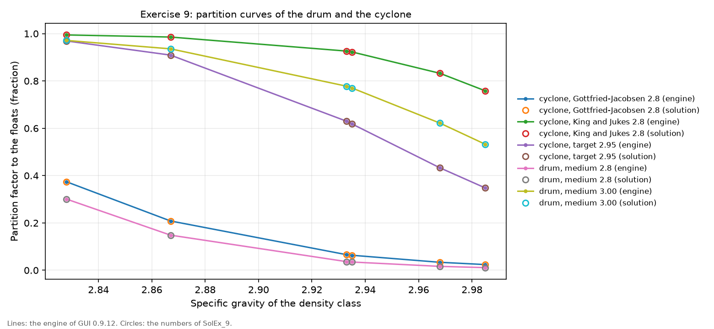
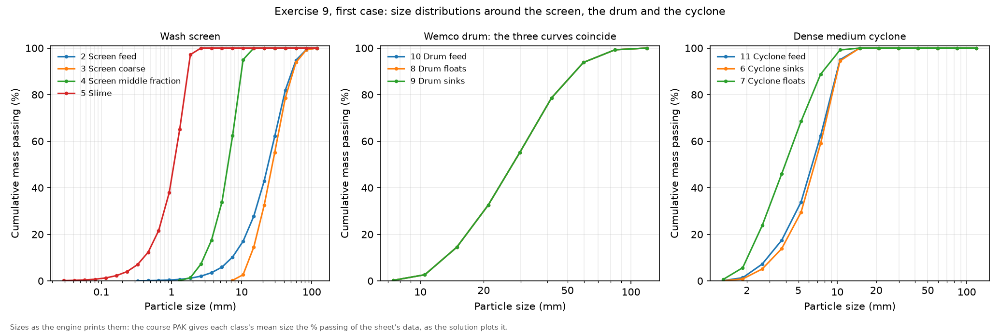

Exercise 9: simple dense media circuit
module 4 · King 7.1-7.2 (dense medium separators)
Read in King: King 7.1–7.2 · Manufactured-medium gravity separation · p. 223
The exercise sheet and the worked files live on the PC copy of Malla; the sheet's numbers are transcribed in this guide.
On this page
What they ask
The sheet is Ex_9.pdf (Bertil Pålsson, 2010-11-03, two pages). Magnesite deposits nearly always come with calcite and quartz, and dense media separation is used to make a "good" concentrate, which in this trade means less than 2 % CaO and less than 3.5 % SiO₂. Dense medium cyclones, or Dyna Whirlpools, are the usual machines; for a coarse feed a dense medium drum can do better. The exercise asks how two of those machines and their models work.
The circuit (2.1). The feed is washed and split on a double-deck wash screen with decks of 10 and 1.5 mm. The coarse fraction goes to a Wemco drum, the middle fraction to a dense medium cyclone, and the fines to the final deposit.
The material (2.2). 100 t/h at 30 % solids, largest particle 100 mm, three minerals:
| Mineral | Density (g/cm³) | Analysis |
|---|---|---|
| Calcite | 2.70 | 56 % CaO |
| Silicate | 2.67 | 100 % SiO₂ |
| Magnesite | 3.00 | 48 % MgO |
The ore is described with 6 grade classes and 1 S-class: the composition of each density interval, from the washability data below, goes into the grade classes. The sheet adds that the composition does not change with particle size, so the whole feed takes one grade distribution.
| Density (g/cm³) | Weight % | % CaO | % SiO₂ |
|---|---|---|---|
| float at 2.85 | 21.6 | 19.3 | 18.2 |
| 2.85 to 2.88 | 5.70 | 21.76 | 2.49 |
| 2.88 to 2.91 | 3.20 | 10.15 | 1.52 |
| 2.91 to 2.94 | 0.90 | 9.67 | 2.92 |
| 2.94 to 2.96 | 7.60 | 2.95 | 3.89 |
| 2.96 to 3.03 | 61.00 | 0.96 | 2.55 |
| sink at 3.03 | 0.00 |
| Sieve (mm) | Cum. % finer | Sieve (mm) | Cum. % finer |
|---|---|---|---|
| 60 | 95.0 | 7.4 | 10.2 |
| 42 | 82.0 | 5.3 | 6.0 |
| 30 | 63.0 | 3.7 | 3.5 |
| 21 | 43.2 | 2.6 | 2.0 |
| 15 | 27.6 | 1.9 | 1.2 |
| 10.5 | 17.0 |
The machines (2.3). Start with a cut density of 2.8 g/cm³ in both stages, and use the Karra model for the screen.
Evaluation (2.4). (1) Which unit does the best job? (2) How is the water balance treated in each unit? (3) Is there a fundamental difference between the models after Lynch and those after Gottfried and Jacobsen?
Sensitivity (2.5). (1) Model the cyclone after King and Jukes instead: any difference, and why? (2) Try to bring the CaO of the sinks down to the quality limit. Is it possible?
How the work flows
The exercise is one base run read three ways, and then two sensitivity runs. The circuit, the ore and the feed are built once. The base run has both cut densities at 2.8, and all three evaluation questions are answered from it: which unit gives the better sinks, what each unit does with the water, and how the drum's partition curve differs from the cyclone's. The sensitivity runs then change one thing at a time: first the cyclone's model, from Gottfried and Jacobsen to King and Jukes, and then, back on Gottfried and Jacobsen, the two cut densities, raised step by step until the sinks carry less than 2 % CaO.
- Fixed for every run: the ore (three minerals, six density classes, one grade distribution for every size), the feed of 100 t/h at 30 % solids, the screen with its two decks and its surface water, and the water added in front of the cyclone.
- Chosen once: the models. The screen is DSC2 (the Karra double-deck model), the drum is WEMC (the Wemco drum, a Lynch partition curve), and the cyclone is DMCY with its cut-point model on Gottfried and Jacobsen.
- Turned in the sensitivity runs: the cyclone's cut-point model once, then the cyclone's target density and the drum's medium density.
- Read after each run: the tonnage and the % CaO of each sinks product, the partition factors of both separators, the % solids of every product, and in the last loop the SiO₂ of the sinks and the magnesite they recover.
- Compared at the end: the drum against the cyclone, the two cyclone models against each other, and the grade that the CaO limit costs in recovery.
What you touch, read and wait for:
| Run | What you change | What you read | When to stop |
|---|---|---|---|
| Base run | Nothing beyond the sheet: DSC2 at 10 and 1.5 mm, WEMC at a medium density of 2.8, DMCY at a target of 2.8 | Sinks and floats of both units in t/h and % CaO; the partition factors; the % solids of every product | After one run: the three questions of 2.4 are read here |
| King and Jukes | The cyclone's cut-point model, from 1 to 2, with a medium density of 2.8 | The cyclone's sinks and floats, and its partition factors, against the base run | One run |
| CaO limit | Back to Gottfried and Jacobsen; the cyclone's target density and the drum's medium density, one step at a time | The CaO and SiO₂ of the two sinks together, and the magnesite they recover | When the sinks carry less than 2 % CaO |
How to check a run
- The feed. The feed fly-out reads 6.63 % CaO, the washability table's weighted average. Another number means that the grade classes or the grade distribution are not the sheet's.
- The screen. The coarse fraction carries about 84.5 t/h, the middle fraction about 14.5 t/h, and the slime about 1 t/h with most of the water. The hand split of Before MODSIM is close to that.
- The partition factors. Both reports list, for each density class, the share that leaves with the floats. It must fall as the density rises; with both cuts at 2.8 even the lightest class, at 2.83, mostly sinks.
- The sinks by hand. Multiply each class's weight by the share that sinks and add up: the drum's sinks come out at 77.5 t/h and 5.63 % CaO by hand, as in the report (see Before MODSIM).
Why (the engineering)
Dense media separation: the medium decides what floats. A manufactured medium is a suspension of very fine magnetite or ferrosilicon in water whose density can be set between the densities of the particles to be separated. Particles lighter than the medium float and heavier ones sink. In a static bath the cut is the density of the medium, but in a continuous machine it is not: in a cyclone the medium flows inward towards the vortex finder and drags particles with it, so a particle must be somewhat denser than the medium to reach the underflow, and the cut lies above the medium density. King (section 7.2.1) calls the difference, divided by the medium density, the normalised cut-point shift (NCPS), and it grows as the particles get smaller.
The partition curve. A real separator does not cut sharply at one density. For each density it sends a share to the floats and the rest to the sinks, and plotting that share against density gives the partition curve. Its middle point is the cut, ; its steepness is measured by the ecart probable, , the half-width of the density band between the 25 % and 75 % points, and by King's corrected imperfection (section 7.2.3). A small EPM is a sharp separation.
Three model families. The sheet names them, and MODSIM's gravity models are made of them. Lynch's model is a partition curve of fixed shape around a cut density, used for coarse material at normal gravity; the Wemco drum model WEMC is one, and it sets the same cut for every particle size. Gottfried and Jacobsen's model starts from a target density and moves the actual cut with particle size, from coal washing data, for fine material or increased gravity; it is the first choice of the cyclone model DMCY. King and Jukes' model takes the medium density as its input and computes the cut from it, with the cut-point shift of a cyclone; it is the second choice of DMCY.
Why the CaO limit is hard here. The six density classes of this ore lie between 2.83 and 2.99 g/cm³, a band of only 0.16. The solution's cyclone and drum have an EPM of about 0.04, so their partition curves fall from 75 % to 25 % over about 0.08 g/cm³, half of that band: they cannot cut cleanly between two classes that are 0.07 apart. King's Table 7.2 lists a dense medium cyclone on magnesite with a cut point of 2.82 and an imperfection of 0.028, the same order.
Before MODSIM: numbers by hand
From assays to minerals. The washability table gives CaO and SiO₂, and MODSIM needs minerals. Calcite is 56 % CaO, so a class with 19.3 % CaO holds 19.3 / 0.56 = 34.5 % calcite; the silicate is pure SiO₂, so 18.2 % SiO₂ is 18.2 % silicate; the magnesite is the rest, 47.3 %. The same for every class:
| Class | Calcite % | Silicate % | Magnesite % | Density (g/cm³) |
|---|---|---|---|---|
| float at 2.85 | 34.5 | 18.2 | 47.3 | 2.828 |
| 2.85 to 2.88 | 38.9 | 2.5 | 58.6 | 2.867 |
| 2.88 to 2.91 | 18.1 | 1.5 | 80.4 | 2.935 |
| 2.91 to 2.94 | 17.3 | 2.9 | 79.8 | 2.933 |
| 2.94 to 2.96 | 5.3 | 3.9 | 90.8 | 2.968 |
| 2.96 to 3.03 | 1.7 | 2.6 | 95.7 | 2.985 |
The density of a class follows from its composition, adding by volume as in Exercise 10:
These six densities are the ones MODSIM uses and the course file carries. Look at them against their intervals, though. Four land inside, but the class of 2.88 to 2.91 computes to 2.935 and the class of 2.94 to 2.96 to 2.968, both above their intervals, so the float and sink test and the mineral densities do not quite agree. The model separates by the computed density, which is one more reason why the two lightest classes of calcite-rich material are so hard to split from the rest.
The feed. The weighted averages of the table give the feed: 0.216 × 19.3 + 0.057 × 21.76 + 0.032 × 10.15 + 0.009 × 9.67 + 0.076 × 2.95 + 0.61 × 0.96 = 6.63 % CaO, and in the same way 6.0 % SiO₂ and 82.2 % magnesite, which is 39.4 % MgO.
The screen by hand. From the sieve analysis, about 16 % of the feed is finer than 10 mm (between 17.0 % at 10.5 mm and 10.2 % at 7.4 mm) and about 1 % finer than 1.5 mm. An ideal screen would send 84 t/h to the drum, 15 t/h to the cyclone and 1 t/h to the slime. The Karra model gives 84.5, 14.5 and 0.97 t/h, because a real deck keeps some of the near-size particles on top.
The drum's sinks by hand. The drum's report gives the share of each class that goes to the floats: 0.3009, 0.1485, 0.0349, 0.0365, 0.0165 and 0.0112. The share that sinks is one minus that, and the sinks are the sum of the class weights times those shares:
So 91.7 % of the drum's 84.5 t/h sinks, which is 77.5 t/h. Weighting the CaO of each class the same way gives 5.167 % of the feed mass as CaO in the sinks, and 5.167 / 0.917 = 5.63 % CaO: exactly the drum's sinks in the report. The model is nothing more mysterious than this table.
What a perfect separator could do. If a machine could put the first two classes (the calcite-rich ones) in the floats and the last four in the sinks, the sinks would be 72.7 % of the feed with
and 2.65 % SiO₂, and they would recover 83.5 % of the magnesite. So the ore itself allows a good concentrate. What stands in the way is the width of the partition curves against the narrow band of densities, and that is the answer to question 2.5.2 before you run it.
Step by step in MODSIM
The ready-made projects: not in the Examples folder yet, and why
The PC copy of Malla has this exercise solved on the MODSIM engine in Simulation of Mineral Processing/Examples/Ex09 Dense medium circuit/: the three cases of the suggested solution, the answers to the sheet's questions and two figures. The projects to open in the GUI are not there yet.
- Why. The circuit needs an ore of six density classes, and no project saved by GUI 0.9.12 shows yet how the GUI stores such a material. Saving the course's DMScircuit.PAK once from the GUI as a project shows it; the three cases then join the folder, each checked against the engine's runs.
- Meanwhile. DMScircuit.PAK opens in the GUI with the ore and the circuit of the base run, and the engine reproduces the solution from it to the fourth decimal of every partition factor.
Before the first click, Get MODSIM running without grief covers the decimal point and the saving habits, and Exercise 10 shows the multi-class tabs of the material wizard in more detail.
Draw the circuit: feed, wash screen, drum and cyclone, each separator behind a mixer
GUI: File > New project; place Mixer-1, a Double Deck Screen, a Wemco Drum and a Dense Medium Cyclone, with a mixer in front of each separator; draw Feed > Mixer-1 > screen; top-deck oversize > mixer > drum; lower-deck oversize > mixer > cyclone; undersize > a product named "Slime"; drum sinks and floats, cyclone sinks and floats > four named products; a water feed into the cyclone's mixerDefine the ore: three minerals, six density classes, one grade distribution for all sizes
Flowsheet > Material Definition (System Data), tab by tab with the folds below; then Confirm & Finish and saveComponents tab: calcite, silicate and magnesite, with their analyses
- Calcite, specific gravity 2.70, analysis 56 % CaO. The analysis is what lets a fly-out show % CaO, the number the whole exercise is judged by.
- Silicate, 2.67, analysis 100 % SiO₂. The course file calls it "Silica".
- Magnesite, 3.00, analysis 48 % MgO.
- The picture is the tab from Assignment 1, with one mineral; here it has three rows.
See this window in the GUI

Grades tab: the six density classes as mineral compositions
- Basis = Mass, six classes, from "float at 2.85" to "2.96 to 3.03". The seventh interval, "sink at 3.03", holds no material and is left out, which is why the sheet asks for six.
- Each row is one class's composition, from the table of Before MODSIM: calcite, silicate and magnesite fractions (0.345, 0.182 and 0.473 for the first class, and so on). Normalize rows if the wizard offers it.
- Sp. gr. of class = 2.828, 2.867, 2.935, 2.933, 2.968 and 2.985, computed from the composition. The course file carries exactly these values.
- Check after saving. In Assignment 1 this column was shown but stored as 0; the first report must list the six densities above, or the separators have nothing to cut on.
See this window in the GUI

Properties, Liberation and Washability tabs: nothing here
- Use S-classes: off. One S-class is the same as none.
- Liberation: off. The liberation of this ore is already in its density classes.
- Washability: nothing. The tab is for coal; for a mineral material the float and sink data live in the grade classes and the feed stream.
See this window in the GUI

Size_Conv. tab: a mesh from 100 mm down
- Largest particle size = 0.1 m. The sheet's 100 mm, typed in metres.
- Number of size classes = 25. The course file uses 25 classes in a √2 series from 100 mm, which reaches below the 1.5 mm deck with room to spare.
- Convergence: Modified Newton, 0.1 %. The circuit has no recycle, so it converges at once.
See this window in the GUI

Streams tab and the Feed Stream dialog: 100 t/h at 30 %, the sieve analysis, one grade distribution
- Solids feed rate = 100 t/h, % solids = 30.
- Define PSD: the sheet's eleven sieve points, typed in micrometres: 60000 → 95.0, 42000 → 82.0, 30000 → 63.0, 21000 → 43.2, 15000 → 27.6, 10500 → 17.0, 7400 → 10.2, 5300 → 6.0, 3700 → 3.5, 2600 → 2.0 and 1900 → 1.2.
- Specify grade distributions: on, with the same six weights in every size class: 0.216, 0.057, 0.032, 0.009, 0.076 and 0.61. The sheet says the composition does not vary with size, and the course file repeats that row for all 25 classes.
- The water feed in front of the cyclone: solids 0. The course file sets it so that the cyclone's feed is at 30 % solids, which for 14.5 t/h of solids is 33.8 m³/h of water, of which the screen's middle fraction already brings 2.6: about 31 m³/h.
See this window in the GUI

The wash screen: DSC2, Karra, at 10 and 1.5 mm, with the surface water of the course file
Double-click the screen > Model: DSC2 (Double-deck screen, Karra form), not the default DSC1 > fill as in the foldDouble Deck Screen → DSC2, double-deck screen (Karra form): thirteen fields
- Top deck aperture a₁ = 0.010 m and Second deck aperture a₂ = 0.0015 m. The sheet's 10 and 1.5 mm, in metres.
- Top deck wire diameter d₁ = 0.0038 m and Second deck wire diameter d₂ = 0.0009 m, the course file's values.
- Inclination angle θ = 0°, Top deck length = 3.66 m, Screen width = 1.22 m and Lower deck length = 3.66 m, the window's defaults and the course file's.
- Bulk density of ore ρ = 1603 kg/m³, the default.
- Screen material type = 1, woven wire.
- Screens in parallel = 1.
- Surface water on top oversize = 10 % and Surface water on lower oversize = 15 %, the course file's values: a washed product leaves the deck wet, so the coarse fraction leaves at 90 % solids and the middle one at 85 %.
The drum and the cyclone, both at 2.8
Double-click the Wemco drum > WEMC > medium density 2.8; double-click the cyclone > DMCY > target density 2.8, diameter 0.5 m, cut-point model 1 (Gottfried-Jacobsen)Wemco Drum → WEMC, Wemco drum washer: one field
- Specific gravity of medium ρm = 2.8 (the default is 1.4; it accepts 1 to 5). The model is a Lynch partition curve around the medium's density, the same for every particle size.
Dense Medium Cyclone → DMCY, dense medium cyclone: three fields
- Specific gravity of separation ρ50 = 2.8 (the default is 1.45; it accepts 1 to 3). With the cut-point model on 1 this is the target cut density; with the model on 2 it is read as the medium's density.
- Diameter of cyclone DC = 0.5 m, the default and the course file's.
- Cut-point model = 1, Gottfried-Jacobsen (target specific gravity) for the base run; 2, King and Jukes (medium specific gravity, with the cut-point shift) for sensitivity run 2.5.1.
Run, and answer the three questions of 2.4 from the one run
Run; read the fly-outs of the four separator products; open both reports and copy their partition factorsSensitivity 2.5.1: the cyclone after King and Jukes
Cyclone window: cut-point model 2, keep 2.8 (now the medium's density); Run; then set the model back to 1Sensitivity 2.5.2: raise the cut densities until the sinks carry less than 2 % CaO
With the cyclone back on Gottfried and Jacobsen, raise the cyclone's target and the drum's medium in steps (2.85, 2.9, 2.95, 3.0), one run each; read the CaO, the SiO₂ and the tonnage of the two sinks together; save the run that meets the limitExpected results
The engine of GUI 0.9.12 reproduces the suggested solution SolEx_9.pdf: every flow within 2 % (the largest gap is the slime, a stream under 1 t/h), every CaO grade within 0.06 points and every partition factor to the fourth decimal. In every pair the engine's number comes first and the solution's second.
Base run, both stages at 2.8.
| Stream | t/h | % solids | water m³/h | % CaO |
|---|---|---|---|---|
| Circuit feed | 100 / 100 | 30 / 30 | 233 / 233.4 | 6.63 / 6.63 |
| Screen coarse | 84.5 / 84.5 | 90 / 90 | 9.4 / 9.39 | 6.63 / 6.63 |
| Screen middle | 14.5 / 14.5 | 85 / 85 | 2.56 / 2.56 | 6.63 / 6.63 |
| Slime | 0.972 / 0.992 | 0.44 / 0.446 | 221 / 221.4 | 6.64 / 6.58 |
| Drum sinks | 77.5 / 77.5 | 90 / 90 | 8.6 / 8.61 | 5.63 / 5.63 |
| Drum floats | 7.02 / 7.01 | 90 / 90 | 0.792 / 0.779 | 17.6 / 17.6 |
| Cyclone sinks | 12.9 / 12.9 | 30 / 30 | 30.1 / 30.1 | 5.37 / 5.37 |
| Cyclone floats | 1.62 / 1.64 | 30 / 30 | 3.82 / 3.82 | 16.6 / 16.6 |
- Which unit does the best job (2.4.1)? The cyclone gives the cleaner sinks, 5.37 % CaO against the drum's 5.63 %, which is the solution's answer. The drum's partition curve is the steeper one, though: the solution's reports give it an EPM of 0.0377 against the cyclone's 0.0435. The cyclone wins on grade because Gottfried and Jacobsen's model cuts the finer particles of the middle fraction above 2.8, so more of the light classes go to its floats.
- The water (2.4.2). Both products of the drum leave at 90 % solids and both products of the cyclone at 30 %: the media models keep the dilution of their feed and show nothing of the medium itself. The solution calls this a weakness that is not easy to fix.
- Lynch against Gottfried and Jacobsen (2.4.3). Yes, there is a fundamental difference. Lynch's model, on the drum, cuts every particle size at the same density, while Gottfried and Jacobsen's, on the cyclone, moves the cut with particle size.

Sensitivity 2.5.1, the cyclone after King and Jukes at 2.8.
| Stream | t/h | % solids | % CaO |
|---|---|---|---|
| Cyclone sinks | 2.41 / 2.4 | 30 / 30 | 1.52 / 1.52 |
| Cyclone floats | 12.1 / 12.1 | 30 / 30 | 7.64 / 7.64 |
The cut lands near 3.04 (the solution's ), so most of the cyclone's feed reports to the floats. The solution calls it a totally different view of the flows around the cyclone: the same 2.8 now means the medium, not the cut.
Sensitivity 2.5.2, the cyclone at 2.95 and the drum at 3.00.
| Stream | t/h | % solids | % CaO |
|---|---|---|---|
| Drum sinks | 28.2 / 28.1 | 90 / 90 | 1.95 / 1.95 |
| Drum floats | 56.3 / 56.3 | 90 / 90 | 8.97 / 8.97 |
| Cyclone sinks | 6.8 / 6.8 | 30 / 30 | 1.93 / 1.93 |
| Cyclone floats | 7.74 / 7.73 | 30 / 30 | 10.8 / 10.8 |
The two sinks together are 34.96 t/h against the solution's 34.95, with 1.95 % CaO, 2.93 % SiO₂ and 44.93 % MgO on both, and they recover 39.8 % of the magnesite. So the answer to 2.5.2 is yes, but at the price of a poor recovery: a perfect separator would have reached 1.68 % CaO with 83.5 % recovery.

Common mistakes
- Leaving the coal defaults on the drum and the cyclone. A medium of 1.4 and a target of 1.45 sink every class of this ore.
- The screen's surface water left at 0. The coarse and middle fractions then leave the deck dry, and the water that reaches the drum and the cyclone is not the course file's.
- Grade classes typed as assays. MODSIM wants the minerals in each class, so the CaO and the SiO₂ are converted first (calcite = CaO / 0.56).
- A grade distribution that changes with size. The sheet says the composition does not vary with particle size: one row, repeated for every size class.
- Reading King and Jukes' 2.8 as a cut density. On that model it is the medium's density, and the cut lands about 0.24 above it.
- Stopping at "yes" in 2.5.2. The limit is reached with 40 % of the magnesite, and the answer should say what that costs.
- Expecting the class densities to sit inside their float and sink intervals. Two of the six do not; the model uses the density computed from the composition.
Sensitivity analysis
- The cyclone's model. From Gottfried and Jacobsen to King and Jukes at the same 2.8, the cyclone's sinks fall from 12.9 to 2.4 t/h and their CaO from 5.37 to 1.52 %.
- The cut densities. Raising the cyclone to 2.95 and the drum to 3.00 lowers the sinks' CaO from about 5.6 to 1.95 %, and the sinks from 90.4 to 35.0 t/h.
- What limits the grade. The partition curves are about 0.04 wide (EPM) and the class densities about 0.07 apart, so every step towards a cleaner concentrate throws away magnesite with the calcite.
Hand-in checklist
Nothing of this exercise is graded, but the sheet asks to show: